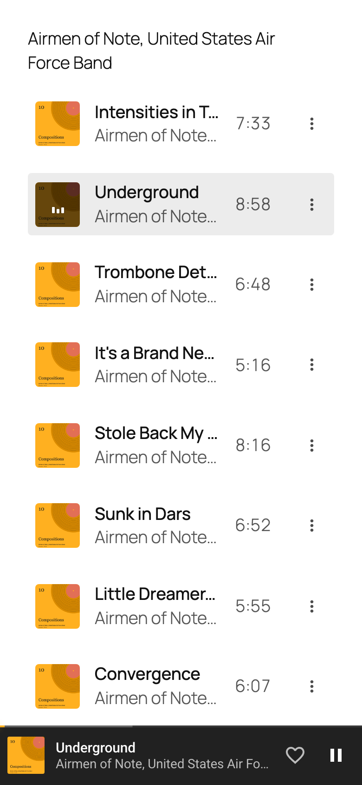

@property
Registers the filament's heat as a real number, so it can animate.

How Riff uses it
The script writes one number, --riff-heat, onto the seek lines and the Now Playing glow every frame. Registering it as a <number> lets a 160ms transition interpolate between those writes. Every colour and opacity in the filament is a calc() off that one number, so the script never touches a colour.
Why
An unregistered custom property is a string and cannot transition, so the wire would step from one brightness to the next each frame.
Without it
The colours still update each frame; only the transition stops working.
Where
- plugins/riff/assets/riff.css, line 549
@property --riff-heat { - plugins/riff/assets/riff.js, line 869
const heated = $$( '.riff-line, .riff-np-glow' );
Links open the source at the commit this page was published from.
Specification: CSS Properties and Values API Level 1. Reference: @property on MDN.